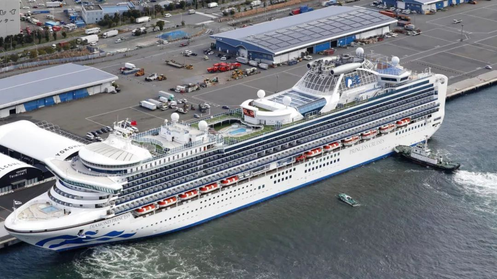
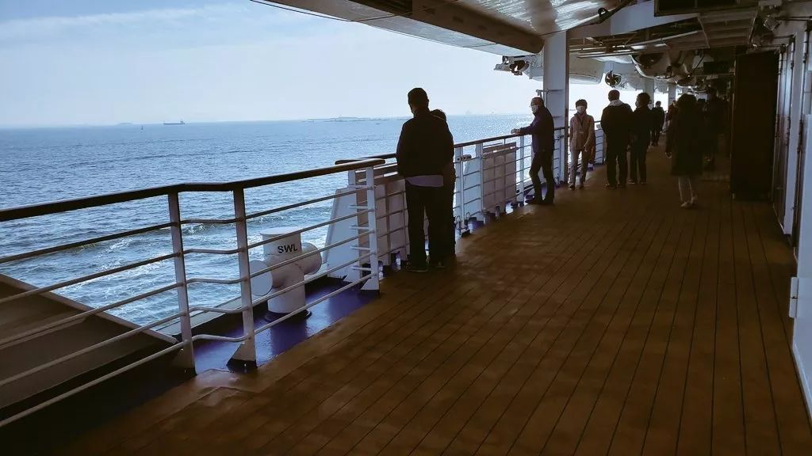
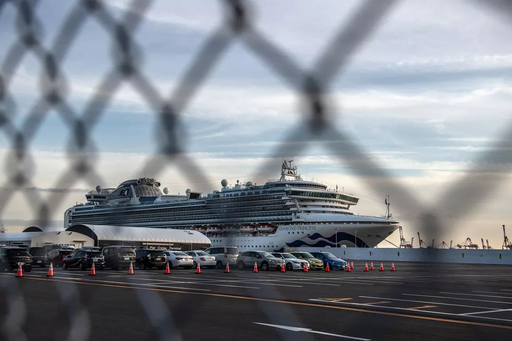
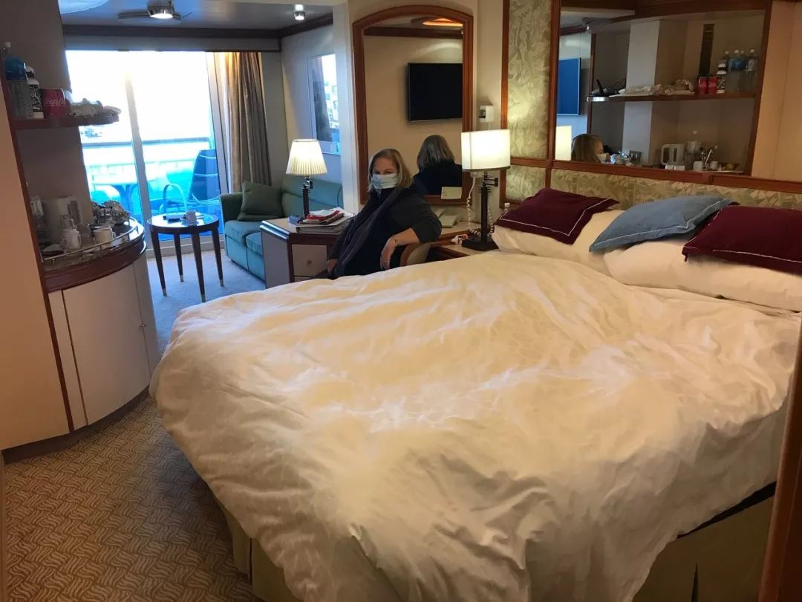
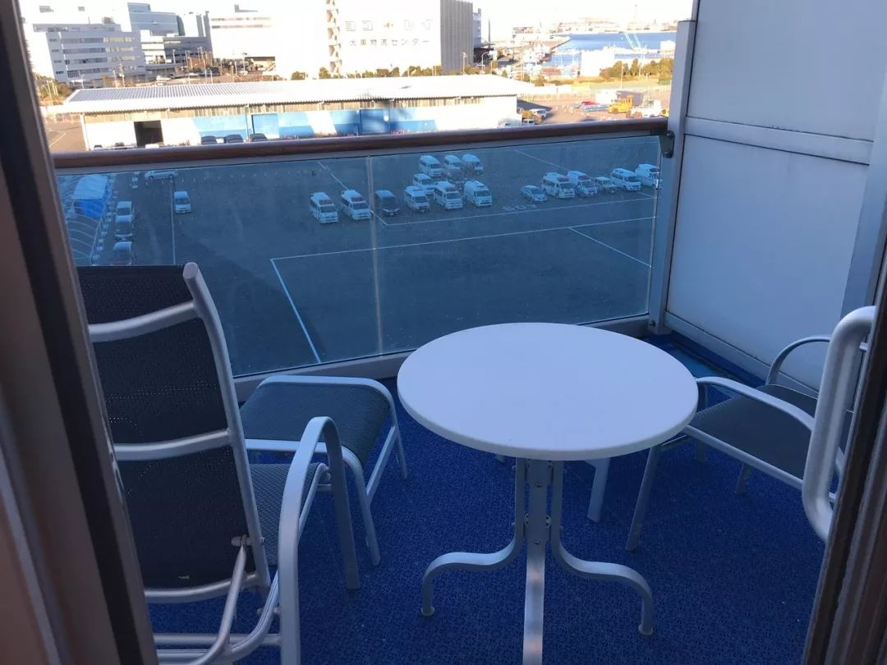
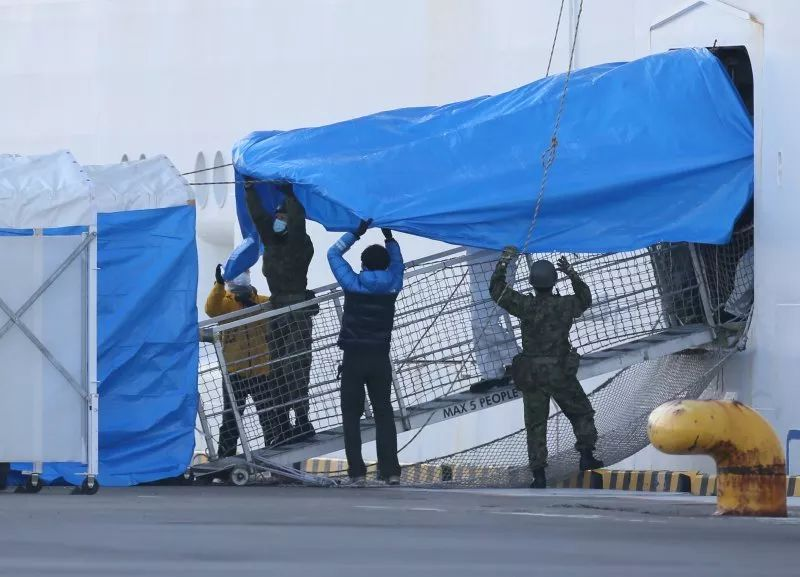
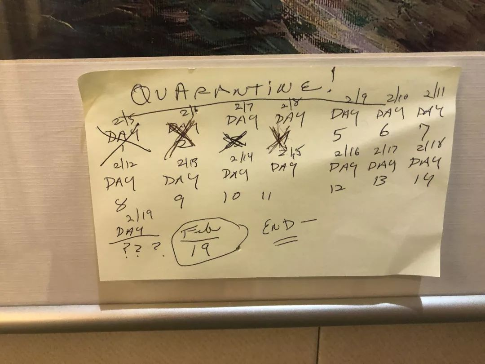

无法靠岸的「钻石公主号」
原文链接 备份链接 「钻石公主号」邮轮的离岸隔离进行到第九天，已经有174人确认感染新冠肺炎，超过了日本本土的确诊感染总数，且还在增加。一个突然来袭的新型病毒，一场突然降临的隔离，一艘无法靠岸的船。「钻石公主号」像个隐喻，它暴露了看似平滑 …
食物、药品、物资、服务……钻石公主号乘客与船员在通过社交网络向外呼救。每个人、每一方，在这起事件中，都有自己的诉求与立场。

△ 2 月 11 日，一家三口向被困在邮轮上的家人挥手致意。摄影 | Carl Court/Getty
2 月 13 日，爆发疫情的豪华邮轮钻石公主号上，还有大约 3000 人没有接受病毒检测。已经有 217 人与 1 名检疫官确诊，还有大约 3400 人被封在船上。
这艘搭载着 3711 人的邮轮从日本横滨出发，途经鹿儿岛、香港、越南岘港和丐冷、基隆、那霸，计划最终于 2 月 4 日返回横滨。事情却在途中发生了变化。1 月 30 日之后，乘客们逐渐发现，他们下不了船了。

△ 2 月 6 日，钻石公主号邮轮停泊在日本横滨港。图片来源 | 美联社
日本厚生劳动省（类似于我们理解中的“卫生部”）于 2 月 5 日确认，邮轮最初 31 个疑似病例中，已有 10 名乘客确诊新型冠状病毒引发的肺炎，所有人都不能上岸，必须在船上隔离 14 天。诱发传染连锁的是一位曾在船上逗留 5 天的 80 岁老人，尽管他已于 1 月 25 日结束旅程下船，但考虑到海上邮轮的封闭性，情况不容乐观。
钻石公主号由美国嘉年华集团（Carnival Corporation & plc）旗下邮轮公司“公主邮轮”（Princess Cruises）运营，拥有 5 种舱位，分别是内舱、海景舱、阳台舱、迷你套房舱和套房舱。其中，没有窗户、狭小的内舱占到总客舱数量的 1/3，另一些客房的观景窗嵌入舱体，无法打开。
△ 2 月 6 日，一名被隔离的乘客站在自己房间的阳台上。图片来源 | 美联社
许多乘客紧张之余，也有些不知所措。在网络通畅的情况下，有人选择了通过社交媒体向外界呼救。本来，在邮轮内上网是收费服务。邮轮内发生疫情后，钻石公主号邮轮向乘客们开放了免费网络服务。
到目前为止，大卫・阿贝尔（David Abel）可能是这艘邮轮上最受媒体关注的“明星乘客”。他是一名来自英国的婚礼策划师，此次登船是为了与妻子萨莉（Sally）一起庆祝结婚 50 周年。自 2 月 4 日起，他开始在 Facebook 定时直播船上情况、答疑解惑，并请求观众帮忙分享视频。截至 2 月 13 日，他一共发布了 50 部视频，总播放量逾 85 万。
早在 1 月 30 日，大卫就试图用 Facebook 给家人报平安。他察觉到船内气氛紧张——船员们采取了各种卫生措施，包括测体温、宣传餐前洗手、禁止使用公共厕所、要求乘客签署“戴口罩协议”等。
不过，大卫与妻子从没想到，病毒离他们这么近。2 月 1 日从冲绳入境日本时，他们发现那里设了体温检查关卡，岸上旅行也全部取消了。直到两天后，大卫在 Facebook 上说：“我今天早上才知道，有超过 300 名乘客从中国香港登船，其中一人已确诊感染新冠肺炎。”大卫不得不取消了归国的机票。
两天后的深夜，一段船长广播打破了寂静。船长告知所有人，日本医护人员将登船，为每位乘客测量体温。

△ 穿着防护服的医护人员从钻石公主号离开。图片来源 | 路透社
但是这个“初筛”也有争议。日本厚生劳动省大臣加藤胜信在 2 月 10 日的记者会上表示，他们没有给船上所有人做核酸检测。日本多家媒体在报道中表示，现在公布的确诊病例都是来自被判断为有发热等症状的人以及与他们有关的“密切接触者”。
一些医学界人士质疑，“密切接触者”并非严格医学定义。这个称谓多次出现在日本厚生劳动省在针对流行性疾病的防控指导纲领中。在 2007 年 1 月厚生劳动省针对当年新型流感的一份指导文件中，“密切接触者”包括同居者、实施救助的医护人员、污染物质接触者以及直接面对面接触者。
但目前针对邮轮上的人，这个“筛网”还是有太多漏洞。一名日本乘客在接受日本电视台采访时表示，他们只“填了一张健康问询表”，然后两名检疫人员上船为他测量了体温。根据中国的防控与检疫经验，还有很多无症状者最终在核酸检测中显示为阳性。

△ 2 月 4 日上午，检疫官在船舱八楼检疫。图片来源 | Twitter @daxa_tw
船上显然出现了一些问题。一条发布于 2 月 5 日的求助视频让大卫获得公众关注。在视频中，他表示自己与妻子已经超过 14 个小时没有获得食物，作为一名糖尿病患者，他随时有可能陷入休克。“我只想知道到底发生了什么！任何正在关注这件事的记者，请给乘客们带些消息来，我会非常非常感激。”视频结尾，大卫说道。
很快，就有超过 5 万人看过这段信息，有多人设法替他联系运营公司。当时，因为病毒来源还未确定，日本厚生劳动省最初怀疑病毒来源是食物。此外，船上的人实在太多，检疫的进度远比他们设想的更为缓慢。不过大卫的事情很快得到了解决。中午 12 点左右，大卫夫妇拿到了餐点——酸奶、橙汁和切成小块的蜜瓜，大卫不仅患有糖尿病，而且乳糖不耐，随后船员又给他捎来面包卷和黄油。
大卫是率先在社交媒体上曝光船内情况的乘客之一，加上乐观健谈的态度与时不时蹦出来的玩笑话，让他获得了多方关注。他在直播中表示，已有来自美国、英国、澳大利亚、日本、中国、新西兰的数十家新闻媒体联系他，他接受了英国《每日邮报》、天空电视台、ITV、BBC 等媒体的采访，公主邮轮公司的管理层也找上了他。
各类新闻网站是隔离期间乘客们的头号信息源，他们会在社交媒体上交换、传播信息。大卫在 Facebook 创建了一个“隔离中的公主号乘客”小组用于交换信息，并禁止媒体访问。截至 2 月 12 日，共有 93 名成员。“好像只有我们被蒙在鼓里，”他回忆道，“隔离刚开始不久的时候，一名乘客发消息告诉我，他的国家的新闻里说已经有确诊病例了，我们才知道发生了什么。”
最新情况、食物供应、药品储备、内舱乘客都是网友关心的问题。大卫在 2 月 6 日的视频中更新说，三餐已恢复定时供应；在医护人员的监视下，乘客们可轮流到甲板上活动 90 分钟——甲板很长，他们便循着长廊吹风、来回转圈。另一名日本乘客也表示，乘客们可以轮流到甲板上透气，轮一次大约需要 3 天。


△ 乘客在甲板上活动。图片来源 | Twitter @daxa_tw
然而主导权不在公主邮轮手上，他们不负责检疫，一切与新冠肺炎有关的数据需由日本厚生劳动省公布。2 月 7 日，大卫拿到了厚生劳动省提供的口罩，这是他在游轮上拿到的第一个口罩。
药可能也不够了。然而拿到药品却并不是一件容易的事情。一名 Twitter 账户名为 @nsk061608 的日本乘客试图通过 Twitter 求助——她的目的非常明确，甚至不会回答任何其他问题——她拿到自己需要的治疗慢性疾病的药品，花了 5 天的时间。她曾打电话给日本厚生劳动省，被推给了邮轮医务室，再联络前台，却得知医务室已优先将药品供应给了中老年乘客。她递交了两次药品申请，终于在再次发 Twitter 求援之后，收到了 14 天剂量的药。
另一名 54 岁的日本乘客在接受日本《朝日新闻》采访时表示，她发烧 38.5 摄氏度，也有关节痛、流感等症状，预约船上医务室看诊后，等了3个多小时，得到了治疗流感的感冒药。她担心自己被感染，但医务室以“并非紧急状况”拒绝了她的病毒检测申请。
2 月 8 日，邮轮停靠横滨大黑码头，除烟酒与电器制品外，外界可向乘客邮寄物资，或自行上交至码头接待处。药品需经医疗人员的二次检查，其余物品在接待处接受检查后，便可上船。这艘邮轮平时一直停泊在横滨港，但分别于 2 月 5 日及 8 日两次驶向公海，目的是通过蒸馏海水补充水资源，厚生劳动省派出直升机及船艇跟随。

△ 停泊在横滨港的邮轮。图片来源 | NBC News
△ 2 月 9 日，停在港口停车场的救护车与消防车。图片来源 | Gay & Phil Courter
向外界发声的乘客大多有自己的诉求，包括大卫。他曾有四个要求：一是信息公开透明化，不想再从新闻网站上获取二手情报；二是想确定随着确诊病患增多，隔离期是否会不断延长；三是他认为厚生劳动省的应对不完善，过去一周他们曾经历一段“空窗期”——没有健康检查，没有例行提问，不清楚医护人员如何监控船上两千多名乘客的状况；四是他想与英国内政部（Home Office）取得联系，获悉归国后的安排，包括自己与家人是否还需要自主隔离两周。
截至 2 月 13 日，英国内政部和日本厚生劳动省都还没有理他。
美国乘客凯瑟琳・柯卡丝（Katherine Codekas）和朋友已在 2 月 4 日决定，取消继续前往上海旅行的计划，改为从日本直接返回美国。真正让她感到慌张是在得知自己要被隔离时。“我意识到我们将被困在船上，这个舱房将成为我们接下去两周的家。”她跟朋友随即取消了原定的归国计划，他们知道，至少接下去的两周内，他们无法回家。
更让凯瑟琳焦虑和不满的是，他们不知道 14 天后，是否只要没有感染的症状，就能被解除隔离回家。“网上的消息众说纷纭，我们希望有个确切的说法。”
根据美国公共广播电台的报道，世界卫生组织突发卫生事件规划执行主任迈克尔・瑞恩（Michael Ryan）则在 2 月 7 日称，如果船上有发现新的感染，隔离期将被重设延长。另外，患者的密切接触者也会被重设观察期。
为了平复乘客心情，船上已开始提供电话心理咨询，但大卫依旧告诉网友，他和妻子吃得越来越少。有日本乘客开始抱怨，目前船上大多提供美式餐食，虽然丰富，但他们想要清淡一些的日式餐食。

△ 船上提供的餐食菜单。图片来源 | Twitter @daxa_tw

△ 钻石公主号上分发的心理咨询热线。图片来源 | Gay&Phil Courter
船上的澳大利亚人已经开始自谋出路。2 月 8 日，一个叫“救他们离开钻石公主号”（Get Them off the Diamond Princess）的 Facebook 小组成立了。小组共计 445 人，由澳大利亚乘客、记者和寻亲者组成。有人开始写信给澳大利亚驻东京领事馆和总理，领事馆响应最快。2 月 8 日，澳大利亚乘客阿拉娜・唐纳森（Alana Donaldson）公布了领事馆的邮件回复——这艘邮轮归日本管辖，他们无权过问。
2 月 9 日，一架澳航 747 飞机从武汉起飞，载着两百多名澳大利亚人回家。这架澳洲撤侨班机让钻石公主号上的澳大利亚人满怀期待，希望政府帮助他们离开这艘“漂浮的监狱”。这两天，也有小组成员在社会公益请愿网站 change.org 发起了标题为“把他们带回家！”的请愿，截至 2 月 12 日下午，仅有 143 人签字。
小组发起人维拉・科斯洛娃-夫（Vera Koslova-Fu） 在帖子中表示她拒绝了许多媒体人的采访请求，更不打算像船上的网络红人大卫那样用视频记录自己的生活。“公开分享会让我觉得心情抑郁。” 维拉也没有决定公开这个由她过去一位关系要好的同事和她发起的小组，因为初衷仅仅是让船上的澳大利亚公民平安回家。
不少乘客在积极与媒体联络。美国乘客考特夫妇（Gay Courter 和 Philip Courter）使用 Google 云盘对外公开每日见闻，记录他们的状态和需求。他们分别是小说家与电影制作人，二人年届 80 岁，一双儿女在为联系媒体奔走。

△ 考特夫妇的客舱，一间能俯瞰港口的套房。图片来源 | Gay&Phil Courter
就在这个邮轮成为“海上监狱”的几天前，钻石公主号还组织了一场舞蹈比赛，每位乘客随机匹配舞伴。舞厅灯光驳杂，人们脸色红润，舞步疯狂。考特夫妇的儿子气愤地发了 Twitter：“随机的舞伴！”现在看来，这的确有可能成为传染扩散的原因之一。
考特夫妇的阳台相对开阔，能看到横滨附近的海域和港口。自隔离起，他们密切关注着运载车辆的动向。有两个出口正在被张罗起来，蓝色的幕布支撑起两条长长的走廊。即便如此，14 天的隔离还是得数着日子熬过去。

△ 考特夫妇房间的阳台。图片来源 | Gay&Phil Courter

△ 2 月 10 日，工作人员用油布盖住钻石公主号的舷梯。图片来源 | 美联社
他们贴起了一块便利贴，每天划掉度过的日期。在被醒目圈起的 19 号后边，则是 3 个问号——19 号，是钻石公主号目前计划解除隔离的日子，眼下，他们很难预料事情的走向。盖曾写过一部关于邮轮谋杀案件的悬疑小说，提起这事，她笑道：“我们都觉得挺黑色幽默的。”

△ 考特夫妇用一张便利贴记录时间。图片来源 | Gay&Phil Courter
考特夫妇也在担心船上的其他人。2 月 7 日，他们在 Google 云盘里写道：“我们要感谢船员们不知疲倦地服务。同时，更重要的是，我们认为他们也面临传染风险，因为他们住在更拥挤的宿舍里。这些人签约进入服务行业，从未接受医务培训，不能像专业人士那样在具有潜在传染性的环境中工作。”

△ 乘客在门上张贴给邮轮工作人员的感谢信。图片来源 | Twitter @Tony Roberts
他们的担忧成真了。拥挤、不透气的空间的确是病毒传染的“温床”——船上共有 1000 多名船员生活在甲板下的内舱室，4 人共用一间卫生间，平时聚集在食堂用餐。这些人大都来自印度、菲律宾、印度尼西亚、斯里兰卡、乌克兰等国家。
印度籍船员比拿・库玛・萨卡（Binay Kumar Sarkar）是钻石公主号的厨房炊事员。他在 Facebook 视频里说：“医护人员只拿走了 500 多个样本，他们也只检测体温超过 37.5 度的人。”他呼吁印度政府和联合国采取行动，无论是隔离、撤侨都可以，他们只想平安回家。
除了比拿，很少有船员愿意公开身份——他们担心丢掉工作。2 名船员因为在社交媒体上表达情绪而受到警告。一位不愿具名的客舱侍者告诉“未来预想图”，他现在每天工作 12 个小时，中午有 3 小时午休，公司承诺，隔离期的工作日会支付 3 倍薪水。
“我们被禁止与乘客交流，只从新闻中获取信息，每个人都只能‘放心’。”另一名匿名船员接受了乌克兰报纸《KP》的采访，“酒要钱，价格在 50 毫升 30 美元，非常昂贵，但食物是免费提供给所有人的。日本政府表示，他们会带来更多食物。”
这些员工没有防护服，平时仅佩戴口罩与一次性手套。厚生劳动省认为，因为船员不能与乘客接触，感染的可能性不大。
日本厚生劳动省在一次记者会上澄清，他们的首要任务是解决药品。药品以外的物资，他们会与地方政府一起提供给邮轮上的乘客。

△ 美国乘客马修・史密斯（Matthew Smith）在 Twitter 上展示他迄今为止拿到的所有口罩类型。图片来源 | Twitter @mjswhitebread
事情在 2 月 12 日进一步增加了严重性。当天，1 名横滨检疫所的检疫官也确诊感染。他曾在 2 月 3 日晚至 2 月 4 日晚上船检疫，工作范围包括回收问卷、为乘客测体温，也曾进入乘客舱室。检疫过程中，他戴着口罩与手套，但并未穿戴防护服与护目镜。
对此，日本厚生劳动省表示，这些举措遵循的是世界卫生组织（WHO）的指导方针。感染检疫官在 2 月 5 日至 2 月 7 日期间还在正常上班，9 日发烧，10 日送医确诊。
根据日本厚生劳动省于 2 月 13 日公布的数据，钻石公主号邮轮共搭载 3711 人，其中乘客 2666 人，船员与工作人员 1045 人。共有 713 人接受检查，218 人确诊。这些确诊病例已陆续运至日本医疗机构救治。日本国内共有 33人确诊，其中包括撤侨人员中的 12 人。日本本土总计确诊感染人数升至 251 人。
此次钻石公主号事件也是中国境外首例聚集性感染案例。乘客们参加的是为期 16 天的“初春东南亚大航海”邮轮旅行项目，售价在每人 25 万日元（约合 1.6 万元人民币）至 138.2 万日元（约合 8.8 万元人民币）之间。
亚洲公海上，还有许多邮轮，最近，它们也可能成为病毒高危易发区。据《日本经济新闻》报道，根据日本国土交通省的资料，外籍邮轮计划在 2 月停靠日本诸港 123 次，现已降至 75 次。此外，许多途经中国的邮轮在多国港口被拒入港，不得不改变航行计划。
国际游轮航线协会（Cruise Lines International Association）就此次疫情发出声明，在邮轮出发前的 14 日内，途经中国或表现出疑似症状的乘客或船员将被拒绝登船，成员公司会监控乘船者的身体状况。该协会拥有超过 50 个邮轮公司会员，运营全球 95% 的邮轮航线。
公主邮轮于 2 月 9 日向“未来预想图”证实，日本厚生劳动省现已组成了由 16 名医生、12 名护士及医疗接待人员构成的专业医护团队，并安排向船上运送 600 余份药品，准备了 7000 个防护口罩。根据日本厚生劳动省公开的信息，他们从乘客处共计收到了 1700 多份药品申请，将根据紧急程度依次处理。
现在，检疫组优先检查高龄乘客与有发热等症状的人，标准更为细致，船上提供的口罩也升级为 N95 级别。在 2 月 10 日的一场新闻发布会上，日本厚生劳动省大臣加藤胜信表示，在考虑引入民间检测公司与大学机构增加检测范围。日本内阁官房长官菅义伟则承认，“目前来看，检测所有人是有困难的。”
加藤胜信也表示，由于存在“实施机制原因”，加上必须考虑到万一其他地区发生疫情时的应对处置，此次没法对邮轮全员实施检查。但他也强调，为防止感染扩散，正在考虑为除一部分船员以外的所有乘船者做病毒检查。
2 月 7 日，日本国立感染研究所发布了一份《针对新型冠状病毒感染症的现状评价与日本国内监督、医疗机制整备报告》，其中提出了包括检测机制、医疗机制、确诊对策、疑似对策、出院标准等在内的各项基准。目前临床实践中发现的“假阴性”可能，也增加了检测过程的复杂性。

△ 日本国立感染研究所提出的 SARS-CoV-2 感染症患者对应流程。图片来源 | 日本国立感染研究所
据日本厚生劳动省推算，目前日本全国针对此次病毒的每日检测能力约为 1500 至 2000 件。日本电视台援引日本厚生劳动省一名职员的表述说，“由于还要处理归侨问题与其他一些原因，不能说所有的检测（试剂）都用在邮轮上。”
也许会有新的解决方案。2 月 12 日，加藤胜信在日本众议院预算委员会集中审议时进一步提出，感染者在陆地运送过程中存在病毒传播风险，希望能“加快讨论配备检查与治疗功能的‘医院船’”。目前，日本没有国家所有的“医院船”，但日本海上自卫队等机构拥有少量“医院船”，以及一批可以收治患者、设置手术台的船舶。截至 2 月 11 日，因为肺炎或其他疾病下船治疗的乘客与船上工作人员共计 16 人。到 2 月 13 日为止，还有大约 3000 人没有接受病毒检测。
日本厚生劳动省于 2 月 13 日公布新措施：新一轮检测将从 80 岁以上的高龄乘客等易感人群开始。检测结果为阴性的乘客，若居住在没有窗户、窗户无法打开的房间里，或者拥有基础疾病，可依照本人意愿，于 2 月 14 日起陆续下船，前往政府准备的隔离机构度过隔离期。
钻石公主号的隔离措施仍暂定于 2 月 19 日结束——尽管社交网络上，已多次出现针对邮轮上病毒进一步传播扩散的担忧。
（乌克兰报纸《KP》记者 Yaroslav Kulish 对本报道亦有贡献）
钻石公主号新型冠状病毒肺炎感染事件发展时间线
1 月 20 日
【邮轮】钻石公主号从日本横滨出发。计划途经鹿儿岛、香港、越南岘港与会安、基隆、那霸，最终返回横滨。
1 月 25 日
【乘客】钻石公主号经停香港，一名 80 岁老人下船回家。
1 月 30 日
【乘客】老人因发烧就医。
【邮轮】钻石公主号开始采取防疫措施。
2 月 1 日
【乘客】老人确诊感染新型肺炎。
【邮轮】钻石公主号由冲绳入境日本，当日取消了所有行程。
2 月 3 日
【官方】深夜，日本医护人员登船实行海上检疫。
【邮轮】钻石公主号没有按计划进入横滨港。
2 月 4 日
【官方】日本厚生劳动省在每周例行的记者会上宣布，决定对该邮轮以《检疫法》为基础实行登船检疫。允许一位脑梗塞乘客以及其配偶下船接受治疗，此二人经核酸检测，并未发现新型冠状病毒感染。
2 月 5 日
【官方】日本厚生劳动省针对有发热等症状的人，以及他们的“密切接触者”实施核酸检测。检测对象共计 273 人。第一批 31 名受检者中，确诊的 10 人被转移至神奈川县的医疗机构。钻石公主号正式开始封船隔离。
【乘客】上午 10 时，大卫・阿贝尔（David Abel）在 Facebook 就食物问题发布第一支求救视频。2 小时后，他获得了食物。
【乘客】日本乘客 @nsk061608 因药物短缺，打电话联系日本厚生劳动省和船上医务室，未得到确切回复，转在 Twitter 上求助。当晚，她在房间内收到了药品申请书。
【邮轮】钻石公主号离开横滨港，出海取用淡水并倾倒垃圾。
2 月 6 日
【船员】厨房炊事员比拿・库玛・萨卡（Binay Kumar Sarkar）在 Facebook 上发布第一支求助视频。
【乘客】大卫与医生就健康问题通电话。
【乘客】考特夫妇创建共享云盘，向媒体传达船内情况。
【邮轮】钻石公主号重启室内娱乐系统，定时供应三餐。
2 月 7 日
【官方】新增检测 171 人，其中 41 人确诊。已于当日移送至东京、京都、埼玉县、千叶县、神奈川县、静冈县多地拥有传染病病房的医疗机构。邮轮累计确诊 61 人。
【乘客】大卫在 Facebook 公开 4 个诉求。乘客可在医护人员监视下排队前往甲板透气。
【乘客】日本乘客 @nsk061608 未能收到药品。
2 月 8 日
【官方】新增检测 6 人，其中 3 人确诊。邮轮累计确诊 64 人。日本厚生劳动省带入一批药物储备、温度计、湿巾纸、橡胶手套、消毒液、洗手液等物资。
【邮轮】钻石公主号离开横滨港，出海取用淡水并倾倒垃圾。
【邮轮】邮轮开始接受外界物资邮寄。
【乘客】澳大利亚乘客成立 Facebook 自救小组。大卫表示他们无法使用洗衣机，但有专人收集脏毛巾。
2 月 9 日
【官方】新增检测 57 人，其中 6 人确诊。邮轮累计确诊 70 人。当日，日本厚生劳动省决定将新增确诊患者移送至有传染病病房的医疗机构，并向钻石公主号增派医护人员，增援口罩、药品等物资。
【邮轮】公主邮轮公司宣布钻石公主号所有乘客可全额退款。
【乘客】日本乘客 @nsk061608 未能收到药品，再次使用 Twitter 求助，收到公主邮轮回复，当晚她再次提交药物申请书。
2 月 10 日
【官方】新增检测 103 人，其中 65 人确诊。邮轮累计确诊 135 人。在此之后，日本厚生劳动省将会把确诊患者移送至有传染病病房的医疗机构。
【官方】在日本厚生劳动省每周例行记者会上，日本厚生劳动省大臣加藤胜信表示，2 月 10 日会发放完乘客申请的药品。除药品外的物资无需申请，会直接发放至邮轮上。
【乘客】考特夫妇收到日本厚生劳动省提供的 N95 口罩。
【乘客】日本乘客 @nsk061608 收到两日份的药品。
2 月 11 日
【邮轮】钻石公主号离开横滨港，出海取用淡水并倾倒垃圾。
【乘客】美国驻日大使馆通过邮件联系船上的美国公民。
【乘客】日本乘客 @nsk061608 收到十四日份的药物。
2 月 12 日
【官方】据日方通报中国驻日本大使馆，邮轮上共有中国乘客 311 人（其中中国内地 22 人，香港 260 人，澳门 5 人，台湾 24 人），确诊 5 人（其中中国内地 1 人，香港 3 人，台湾 1人）。
【官方】新增检测 53 人，其中 39 人确诊。累计检测 492 人，确诊 174 人（其中船员与工作人员 21 人，乘客 153 人），另有 1 名检疫官确诊。
2 月 13 日
【官方】新增检测 221 人，其中 44 人确诊。累计检测 713 人，确诊 218 人。
【官方】新增检测 53 人，其中 39 人确诊。累计检测 492 人，确诊 174 人（其中船员与工作人员 21 人，乘客 153 人），另有 1 名检疫官确诊。
【乘客】大卫计划 2 月 14 日就网速问题与英国 ITV 电视台新闻节目 Good Morning Bratain 连线。考特夫妇的儿子联系上了一家公关公司，替他们管理媒体关系。
参考资料
①《针对新型冠状病毒感染症的现状评价与日本国内监督、医疗机制整备报告》，日本国立感染研究所
https://www.niid.go.jp/niid/images/epi/corona/2019nCoV-04-200207.pdf
②2 月 10 日加藤大臣新闻发布会会见概要
https://www.mhlw.go.jp/stf/kaiken/daijin/0000194708_00202.html
-
文：邢梦妮 曾童心 刘迪新 顾笑吟
编辑：赵慧
微信编辑：吕姝琦

延伸阅读

—


原文链接 备份链接 「钻石公主号」邮轮的离岸隔离进行到第九天，已经有174人确认感染新冠肺炎，超过了日本本土的确诊感染总数，且还在增加。一个突然来袭的新型病毒，一场突然降临的隔离，一艘无法靠岸的船。「钻石公主号」像个隐喻，它暴露了看似平滑 …
原文链接 备份链接 船上人们的焦虑也与日俱增。艾丽告诉新京报记者，“我们觉得自己不是在被隔离，而是等待着被感染。”和乘客相比，船员的住宿条件更差，艾丽住的员工宿舍两人一间，仅几平米，没有窗户。 全文6300字，阅读约需12.5分钟 1 …
原文链接 备份链接 _ 一名香港游客感染了新冠肺炎病毒，使得这艘邮轮的“春节之旅”演变为一场全球直播的公共卫生事件 _ 文 |《财经》记者 杨立赟 余乐 编辑 | 余乐 最近一周以来，停靠在日本横滨港的“钻石公主号”邮轮成为了全球关注的 …
原文链接 备份链接 2月5日，因船上有乘客被检验出新冠病毒感染，停靠在日本横滨港口的“钻石公主号”上的3600多人开始了14天的海上隔离。截至2月12日，这艘邮轮上的确诊感染者已达174人，远超日本本土的确诊感染总数，“钻石公主号”事件已 …
原文链接 备份链接 被多个国家拒绝停靠之后，在海上流浪数日的“威士特丹号”终于在柬埔寨上岸 文 |《财经》特派记者 金焱 发自华盛顿 编辑 | 余乐 在海上近乎漫无目的地航行数日后，荷美邮轮公司的“威士特丹号”(MS Westerdam …